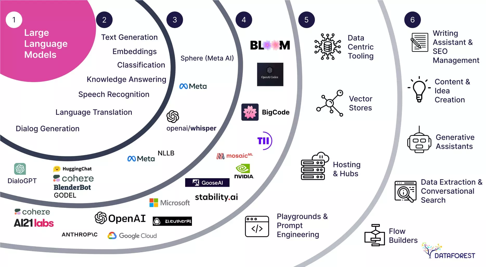
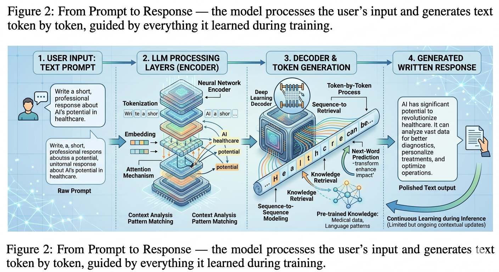

The article you are reading right now could have been written by an AI. That is not a hypothetical scenario — it is a practical reality that millions of people encounter every day without knowing it. Understanding how AI generates text is essential for anyone who reads, shares, or publishes content online.
What Are Large Language Models?
AI text generation is powered by systems called Large Language Models, or LLMs. These are deep learning models trained on enormous amounts of written text — billions of web pages, books, articles, code repositories, and more — to learn the patterns of human language. The most well-known examples include GPT-4, Claude, Gemini, and Llama.
Unlike earlier AI systems that used simple rules or templates to produce text, LLMs are generative — they create entirely new text by predicting what word, phrase, or sentence is most likely to come next, given everything that has come before. This produces output that feels natural, coherent, and contextually appropriate, even though the model has no actual understanding of meaning in the human sense.

How Text Generation Works
At its core, text generation is a process of predicting the next token. A token is roughly equivalent to a word or part of a word. Given a sequence of tokens — whether a question, a paragraph, or just a few words — the model calculates the probability of every possible next token and selects one. It then appends that token and repeats the process, building the response one token at a time until it reaches a natural stopping point.
This process is guided by the billions of parameters the model learned during training. These parameters encode statistical patterns about how words relate to each other across countless contexts — grammar, style, tone, argument structure, factual associations, and more. The result is text that flows naturally and follows the conventions of human writing, even when the underlying content is entirely fabricated.
Tokenization
The input text is broken into tokens — small units of text that the model can process mathematically.
Probability Calculation
The model calculates the probability of every possible next token based on the context so far.
Token Selection
A token is selected — either the most probable one, or a sample from the probability distribution for more varied output.
Repetition
The process repeats — each new token is appended, and the model predicts the next one until the response is complete.
The Role of Context and Prompts
The quality and direction of AI-generated text depends heavily on the prompt — the input provided by the user. A vague prompt produces generic text. A detailed, well-structured prompt gives the model more context to work with and typically produces more relevant and useful output. This is why experienced users of AI writing tools put considerable thought into how they phrase their instructions.
Context is also crucial during generation. Modern LLMs can hold a very large amount of text in their working memory — called the context window — which allows them to maintain consistency across long documents, remember details from earlier in a conversation, and follow complex multi-step instructions. The larger the context window, the more the model can "see" as it generates each new token.

How AI Writing Differs From Human Writing
AI-generated text and human-written text differ in several fundamental ways, even when the surface quality appears similar. Human writing is shaped by lived experience, emotion, personal perspective, and specific memory. AI writing is shaped by statistical patterns in training data, with no personal experience or genuine understanding behind the words.
This difference manifests in subtle ways. AI text tends to be smooth and balanced, rarely taking strong positions or expressing genuine uncertainty. It often lacks the specific, idiosyncratic details that make human writing distinctive. It may confidently state incorrect information — a phenomenon called hallucination — because it is generating plausible-sounding text rather than retrieving verified facts.
AI-generated text is statistically correct and stylistically fluent — but it has no stake in whether what it says is true. That distinction matters enormously.
— Digital Literacy and Media Studies ResearchHow to Spot AI-Generated Text
Identifying AI-generated text is becoming harder as models improve, but several patterns are still commonly observed:
- Overly smooth, consistent prose with little variation in sentence rhythm
- Balanced, hedged language that avoids strong positions or opinions
- Confident statements that turn out to be factually wrong upon checking
- Generic phrasing and a lack of specific, personal, or regional detail
- Repetitive sentence structures, especially starting with "This," "It is," or "In conclusion"
- A tendency to summarize and conclude rather than explore or argue
Risks and Misuse
AI text generation enables the rapid production of misinformation at a scale that was previously impossible. A single person with access to an LLM can generate thousands of fake news articles, social media posts, or academic papers in the time it would take to write one by hand. This volume of synthetic content makes it harder to find accurate information and erodes trust in written media generally.
Other serious misuses include academic fraud, where students submit AI-generated essays as their own work; phishing and social engineering, where AI generates highly personalized scam messages; and propaganda, where AI produces targeted political content at industrial scale. These threats are not hypothetical — they are documented and growing.
AI can generate text that sounds confident, knowledgeable, and credible — even when the information it contains is completely fabricated. Always verify important facts through authoritative sources, regardless of how well-written the text appears.
What We've Learned
AI generates text through large language models that predict the next token in a sequence, guided by statistical patterns learned from billions of documents. The result can be fluent, coherent, and stylistically convincing — but it carries no guarantee of accuracy and reflects no genuine understanding or personal experience.
Recognizing AI-generated text requires attention to patterns like excessive smoothness, generic phrasing, and confident inaccuracies. As AI writing tools become more widely used — for legitimate purposes and for harmful ones — critical reading skills and a habit of verification become increasingly essential for every reader and consumer of written content.
AI-generated text is not a search result — it is a prediction. Just because an AI writes something confidently does not mean it is true. Read critically, verify facts, and never share content you have not checked.